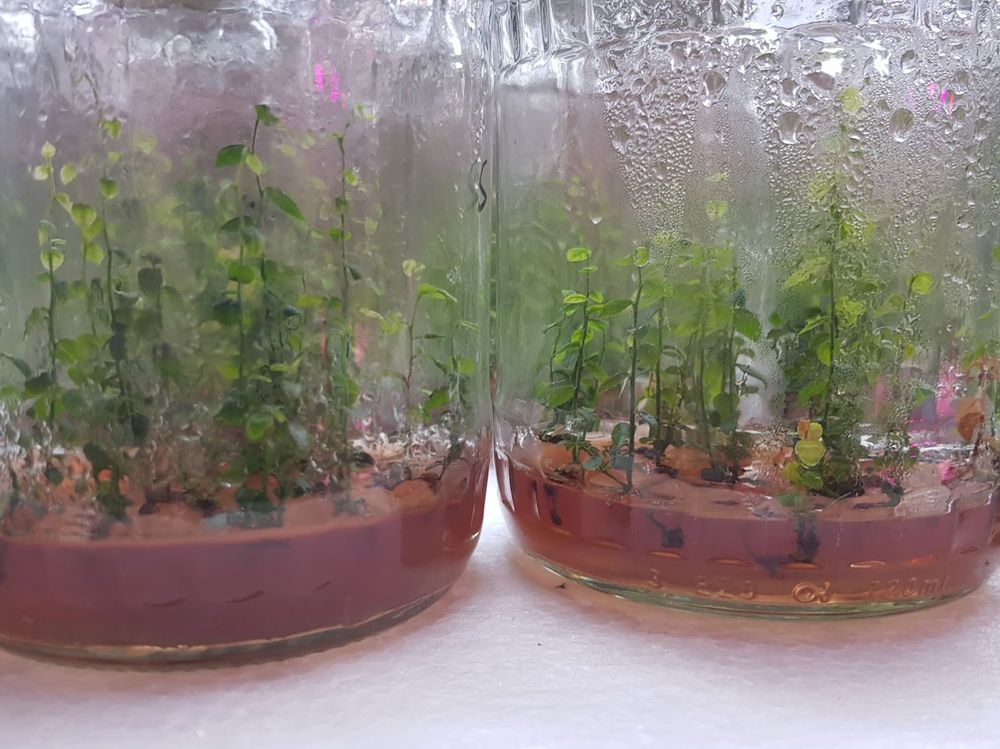
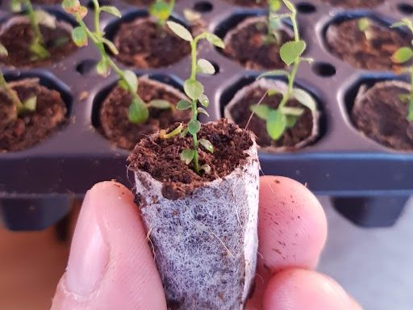
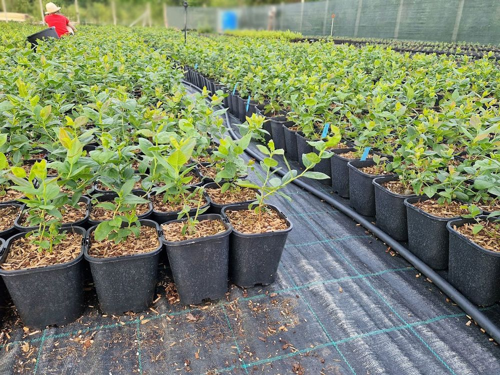
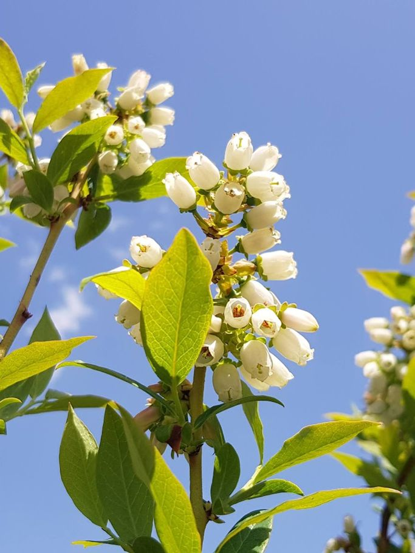
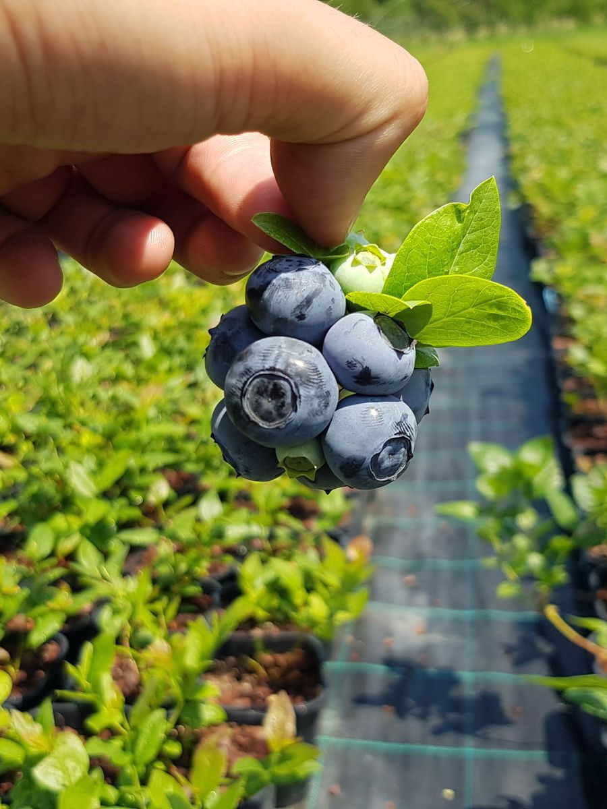
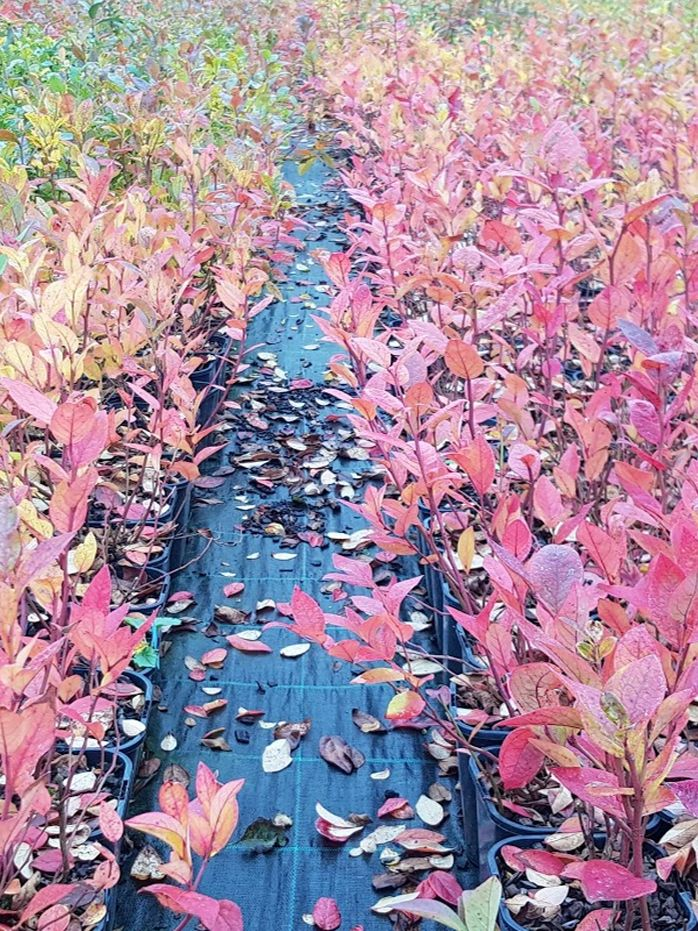
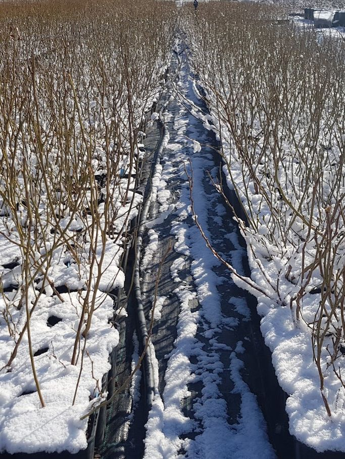

1,4 litri
500–700 g
recoltă estimată în primul an de producție
250 de plante pe palet
Cere ofertă
Pepinieră de afin in vitro din Bologa, Cluj. Plantele noastre au mai multe tulpini, sunt libere de boli și pot da până la 1 kg de afine în al doilea an de la plantare.
Alege formatul cel mai potrivit pentru tine. Indiferent de alegere, îți asigurăm consultanță și suport de la plantare până la producție. Prețul îl stabilim în funcție de cantitate.
500–700 g
recoltă estimată în primul an de producție
250 de plante pe palet
Cere ofertă700 g–1 kg
recoltă estimată în primul an de producție
160 de plante pe palet
Cere ofertă1,2–1,5 kg
recoltă estimată în primul an de producție
80 de plante pe palet
Cere ofertăRecoltele sunt estimări pentru condiții bune de cultură.
Toate plantele noastre sunt produse in vitro, scoase din laborator și aclimatizate în România, în pepiniera noastră din Bologa, jud. Cluj. Sunt crescute și îngrijite aici până când sunt gata de plantat. Pepinieră autorizată, certificată ITCSMS. De ce in vitro și nu butași? →








Acoperim tot procesul cu know-how de specialitate: alegerea terenului, analiza de sol, planul plantației, plantarea și îngrijirea până la primele recolte. Experiența noastră îmbină practica din pepinieră și din plantații cu studiile de specialitate în cultura afinului.
Consultanță: dr. ing. Sabin Molnar